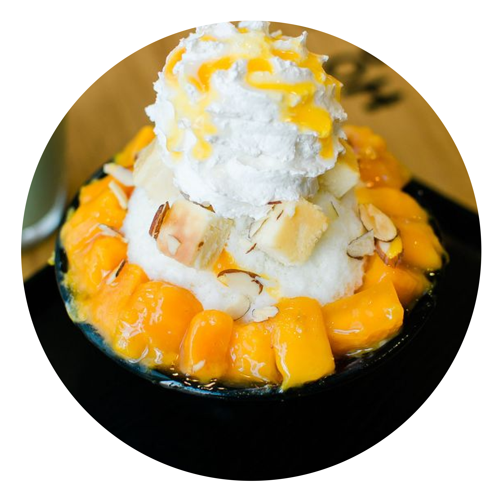

Sulbing
54-2 Gwangbok-ro, Changseondong 1(il)-ga, Jung-gu, Busan
Korean Bingsu (Shaved Ice)
You can't go to South Korea and not try the popular snow ice dessert, bingsu. Sulbing takes typical bingsu ingredients and transforms them into healthier desserts. The rice cake (injulmi) sulbing, milk redbean sulbing, and rice cake toast are the most popular desserts at Sulbing.
